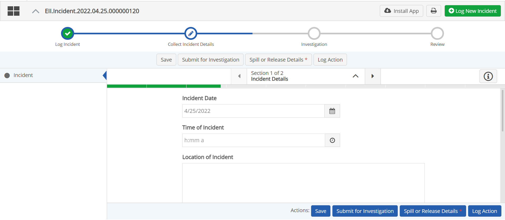

Once you create a new item record, a form is usually be presented for entering further details. The fields depend on the configuration of the form for the App.
Completing any step in the process is the same. There is a form to complete and actions you can take, which depend on the purpose of your App and your permissions.
The actions available at any step are represented as button at the top of the screen, above the form. Possible actions available include:
Save - You can edit the form or upload documents and save your changes for submitting later.
Request Action - You can create an action related to the record. Actions (or corrective actions) are child workflows of the main item record and once created, will be shown as tabs. See Create an Action.
Next Step(s) - One or more buttons may be available to send the workflow to the next step or to initiate another workflow process. Exact instructions depend on your App configuration.
Close - If no further action is required, you can close the record.

To complete the details of the record:
Complete the form fields provided. Form contents depend on the configuration.
To request an action, click Create Action button (label may vary according to configuration). See Create an Action.
To move the workflow along to the next step or initiate another process, click the appropriate action button.
If you click Save your edits will be saved but the process will remain open at this step.